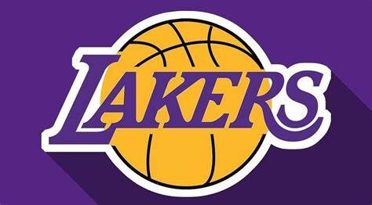
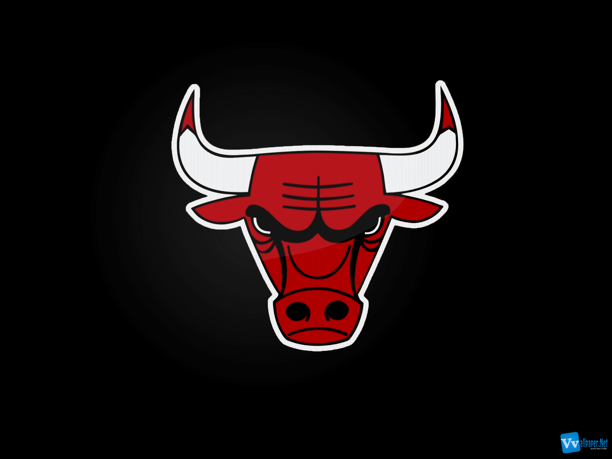

history of basketball
Basketball began with its invention in 1891 in Springfield, Massachusetts, by Canadian physical education instructor James Naismith as a less injury-prone sport than football. Naismith was a 31-year old graduate student when he created the indoor sport to keep athletes indoors during the winters.[1] The game became established fairly quickly and grew very popular as the 20th century progressed, first in America and then in other parts of the world. After basketball became established in American colleges, the professional game followed. The American National Basketball Association (NBA), established in 1946, grew to a multibillion-dollar enterprise by the end of the century, and basketball became an integral part of American culture

The National Basketball Association (NBA) is a professional basketball league in North America. The league is composed of 30 teams (29 in the United States and 1 in Canada) and is one of the major professional sports leagues in the United States and Canada. It is the premier men's professional basketball league in the world.[3]
The league was founded in New York City on June 6, 1946, as the Basketball Association of America (BAA).[1] It changed its name to the National Basketball Association on August 3, 1949, after merging with the competing National Basketball League (NBL).[4] In 1976, the NBA and the American Basketball Association (ABA) merged, adding four franchises to the NBA. The NBA's regular season runs from October to April, with each team playing 82 games. The league's playoff tournament extends into June. As of 2020, NBA players are the world's best paid athletes by average annual salary per player.[5][6][7]
The NBA is an active member of USA Basketball (USAB),[8] which is recognized by the FIBA (International Basketball Federation) as the national governing body for basketball in the United States. The league's several international as well as individual team offices are directed out of its head offices in Midtown Manhattan, while its NBA Entertainment and NBA TV studios are directed out of offices located in Secaucus, New Jersey. In North America, the NBA is the third wealthiest professional sport league after the National Football League (NFL) and Major League Baseball (MLB) by revenue, and among the top four in the world.[9]
The Boston Celtics and the Los Angeles Lakers are tied with the most NBA championships at 17 each. The Golden State Warriors are the defending league champions, as they defeated the Boston Celtics 4–2 in the 2022 NBA Finals, to mark the end of the 2021–22 season.
best teams now

leakers is one of the best teams in nba history The Los Angeles Lakers are an American professional basketball team based in Los Angeles. The Lakers compete in the National Basketball Association (NBA) as a member of the league's Western Conference Pacific Division. The Lakers play their home games at Crypto.com Arena, an arena shared with the NBA's Los Angeles Clippers, the Los Angeles Sparks of the Women's National Basketball Association, and the Los Angeles Kings of the National Hockey League.[9] The Lakers are one of the most successful teams in the history of the NBA, and have won 17 NBA championships, tied with the Boston Celtics for the most in NBA history.[10]
The franchise began with the 1947 purchase of a disbanded team, the Detroit Gems of the National Basketball League (NBL). The new team began playing in Minneapolis, Minnesota, calling themselves the Minneapolis Lakers.[11] Initially a member of the NBL, the Lakers won the 1948 NBL championship before joining the rival Basketball Association of America, where they would win five of the next six championships, led by star George Mikan.[12] After struggling financially in the late 1950s following Mikan's retirement, they relocated to Los Angeles before the 1960–61 season.

The Chicago Bulls are an American professional basketball team based in Chicago. The Bulls compete in the National Basketball Association (NBA) as a member of the league's Eastern Conference Central Division.[9] The team was founded on January 16, 1966, and played its first game during the 1966–67 NBA season.[1] The Bulls play their home games at the United Center, an arena on Chicago's West Side.
The Bulls saw their greatest success during the 1990s when they played a major part in popularizing the NBA worldwide. They are known for having one of the NBA's greatest dynasties, winning six NBA championships between 1991 and 1998 with two three-peats. All six of their championship teams were led by Hall of Famers Michael Jordan, Scottie Pippen, and coach Phil Jackson. The Bulls are the only NBA franchise to win multiple championships while never losing an NBA Finals series in their history.
best duo's in nba

The Bulls started their 1995–96 campaign with a 105–91 win over the visiting Hornets. In that game, Michael Jordan recorded 42 points, 6 rebounds and 7 assists for the Bulls.[14] The next game, they were up against the Boston Celtics. The Bulls scored 35 points in the 3rd quarter as they pull away against the Celtics, 107–85. Six Bulls players scored in double figures in this win.[15] The 1995–96 Bulls posted one of the best single-season improvements in league history and the best single-season record at that time, moving from 47–35 to 72–10, becoming the first NBA team to win 70 or more games.[16] Jordan won his eighth scoring title, and Rodman his fifth straight rebounding title, while Kerr finished second in the league in three-point shooting percentage. Jordan garnered the elusive triple crown with the NBA MVP, NBA All-Star Game MVP, and NBA Finals MVP. Krause was named NBA Executive of the Year, Jackson Coach of the Year, and Kukoč the Sixth Man of the Year. Both Pippen and Jordan made the All-NBA First Team, and Jordan, Pippen, and Rodman made the All-Defensive First Team, making the Bulls one of several teams in NBA history with three players on the All-Defensive First Team.

Shaquille O'Neal (left), and Kobe Bryant (right), helped the Lakers win three straight NBA titles. Though they played well together on the court, the pair had an acrimonious relationship at times in the locker room The Shaq–Kobe feud was the conflict between National Basketball Association (NBA) players Shaquille O'Neal and Kobe Bryant, who played together for the Los Angeles Lakers from 1996 to 2004.
O'Neal and Bryant won three consecutive NBA championships (2000, 2001, 2002), and made an additional NBA Finals appearance in 2004. O'Neal was the NBA Finals MVP in each of their victories. Personal differences and arguments over their respective roles on the Lakers were followed by a trade that sent O'Neal to the Miami Heat while Bryant was re-signed as a free agent by the Lakers. Lakers head coach Phil Jackson wrote a 2004 book, The Last Season: A Team in Search of Its Soul, reflecting on the troubles Bryant and O'Neal had during their last season together.
back to main page